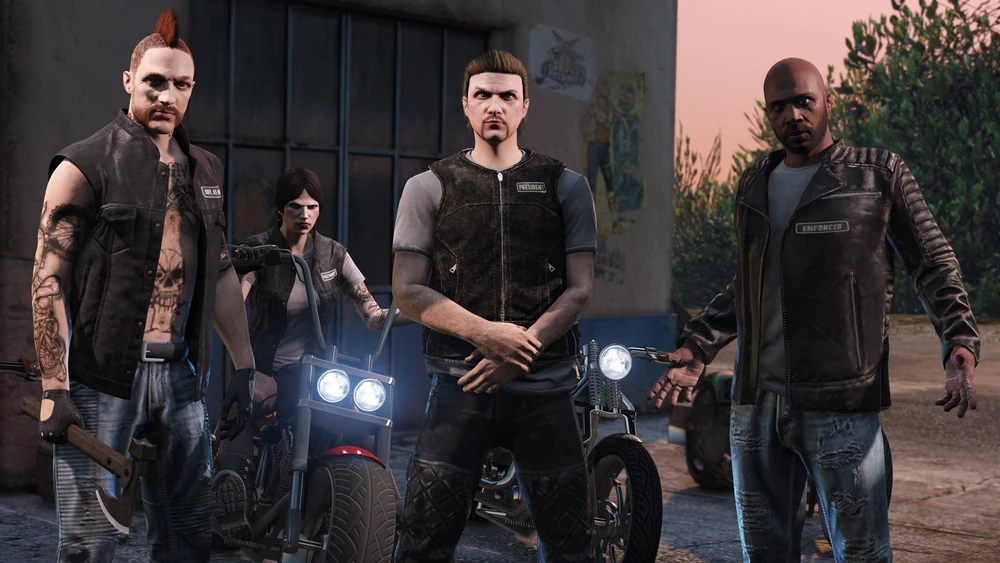
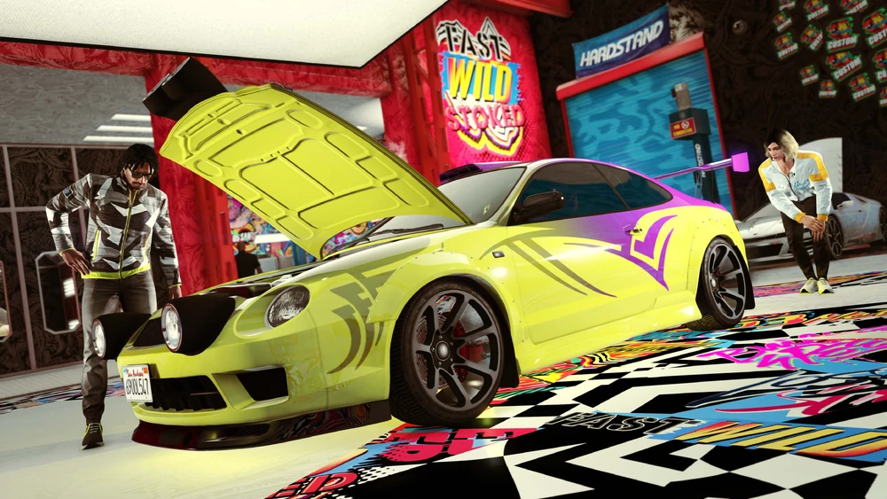

En Gta V hay una gran cantidad de Negocios que nos pueden ayudar a conseguir más dinero y avanzar en el juego.
Las oficinas del ejecutivo es una de las más utilizadas, ya que desde ahí se pueden empezar misiones de mercancia ilegal y exportanción de vehículos,
además, cuando avanzas en el juego y consigues más dinero, puedes comprar expansiones que te permitirán almacenar hasta 60 vehículos.
Club de moteros: Este es el negocio más famoso dentro de Gta V, más que nada por que es el más barato y es el que todo el mundo comprar cuando está empezando.
Aquí podrás desbloquear contratos de sede y comprar propiedades empresariales en las que desarrollar negocios adicionales, como producción de cocaína, falsificación de dinero, producción de meta, cultivo de hierba y falsificación de documentos.
Cada uno producirá productos que podrás vender, pero requerirá suministros y protección.
Además, al igual que en las oficias del ejecutivo, podrás comprar un armero o un taller para poder mejorar armas sin necesidad de ir al bunker.

Bunker: Un búnker subterráneo sirve de cuartel general para producir y distribuir armas como traficante.
A través del ordenador del búnker podrás asignar tareas al personal y gestionar los suministros y las ventas. Además, podrás aplicar mejoras para incrementar la producción y la seguridad.
En este caso, tener un bunker también te permite almacenar un Centro de Operaciones Móvil, en el cual podrás mejorar armas.
Ático principal de The Diamond Casino & Resort: este, a parte de tener uno de los apartamentos más caros del juego, te permitirá acceder a misiones especiales del casino y tener acceso a algunas mejoras varias,
como conserje de aeronaves.
Taller: Este te da acceso a los contratos de robo, y a otro tipo de misiones importantes como puedes ser los golpes. Además de esto claramente te permite realizar modificaciones a los coches
y poder almacenar hasta un total de 10 de ellos. Por último también podrás realizar exportaciones de tus vehículos para que no tengas que estar moviéndolos de un lado para el otro.

Agencias: La agencia de soluciones para famosos es tu base de operaciones para llevar a cabo contratos de seguridad y el contrato vip, que podrás activar desde el ordenador de la agencia de tu oficina.